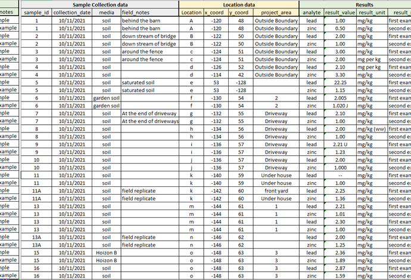
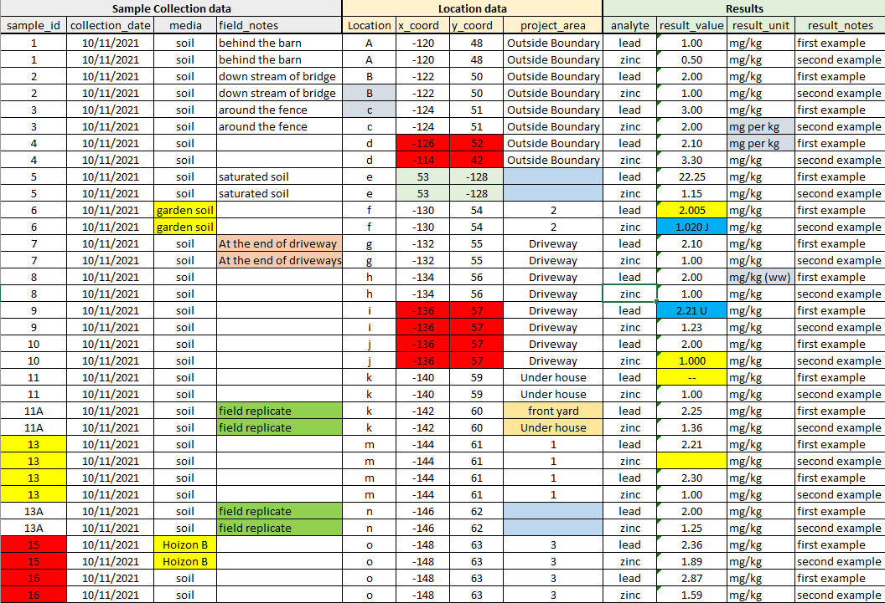

Data Issue Tracking
Data sets that are received from agencies, clients, and other consultants ordinarily have problems. These problems may include:
- Missing information
- Ambiguous terminology
- Conflicting information
- Duplication of data
- Lack of standardization of codes
- Typographical errors
- Lack of data integrity (no enforced primary keys or foreign keys).
In addition to the checklists for data evaluation and data loading, the problems that are identified, unless they are few and minor, should be tracked. The workbook attached to this page provides a structure for logging these issues and tracking their resolution. The workbook includes a “Data Issues” worksheet, and may contain additional worksheets that contain illustrative or supporting information for each issue. Each issue should be described, a resolution identified, that resolution reviewed and revised if appropriate, and the implementation of each resolution tracked.
The specific procedure for use of this workbook is:
- Make a copy of the workbook template for your project. This copy should be placed in or under the directory used for the loading of the data set being evaluated.
- Enter relevant metadata to identify the data set, its origin, its intended use, and its assessed value.
- Log new issues at the end of the list on the “Data_Issues” worksheet, and assign each new issue a new sequential number. Do not renumber any existing issues. Use the “See Also” column to list the numbers of any related issues.
- Add a new worksheet named “Issue_X” where “X” is the number of the new issue, to show supporting information that documents the issue.
- If appropriate, assign a priority to each new issue. The highest priority (1) should be given to issues that, if not resolved, will not allow data to be loaded or may result in misinterpretation of data.
- Develop a proposed resolution strategy for each issue.
- If appropriate, have the proposed resolution strategy reviewed. Review may be appropriate if:
- Selection of the best resolution strategy requires additional technical expertise
- Implementability of the resolution requires review of additional material and that review will be delegated
- Alternate approaches may compromise the usability of the data or the database in different ways
- There are implications for data completeness or usability that should be addressed by a management decision.
- After each issueis resolved, record this fact and the name of the script that implements that resolution in the rightmost columns of the “Data_Issues” worksheet.
These instructions are also contained on the first page of the workbook.
A template for a data issue tracking workbook can be downloaded from the link below. Examples of data set issues are on the wiki page Example of Data Set Issues.
Creating Issue Logs From Within SQL Scripts
SQL scripts are a primary means for loading, manipulating, and summarizing data, and data quality issues may be identified during these processes–particularly during data loading. Often many of these issues can be dealt with immediately. Some, however, may not be readily addressed and should be captured in an issue log so that they can be tracked and their resolution documented. The SQL scripts included here (below) simplify the creation of an issue log from within SQL scripts that are used to carry out other data management operations. These scripts are intended to be run using execsql.
The script log_issue.sql creates issue log entries. It should be imported into the main data manipulation script at every point at which there is an issue to be logged. Two or three execsql substitution variables should be set (using the SUB metacommand) each time before the log_issue.sql script is imported. These substitution variables are:
- dataset: A name for the data set to which this issue applies.
- issue: A description of the issue.
- issue_data: The name of a table or view containing a data summary that illustrates the issue. This substitution variable need not be defined if no illustrative data are necessary or applicable. Use the RM_SUB metacommand to un-define this variable if it has been previously used.
Issues will be logged in a SQLite database named issue_log.sqlite in the same directory as the script. In this database the issue_log table will contain the data set and issue descriptions. This table will also contain additional columns that are present in the issue log template (attached above). The primary key of this table is the data set name and the issue description. If the same issue is found multiple times for the same data set, it will appear only once in the issue log. Each data summary that illustrates an issue will be stored in its own table, with a name corresponding to the automatically-assigned issue number.
The SQLite database containing the issue log will be automatically created if it does not exist.
The script issue_log_to_ods.sql (and issue_log_to_ods_sheets.sql, which is called by the main script) will convert the issue log from the SQLite database to an OpenDocument spreadsheet.
Header notes in the scripts provide additional information about their usage.
- log_issue.sql
- issue_log_to_ods.sql
- issue_log_to_ods_sheets.sql
The following code snippet illustrates the use of the log_issue.sql script during data loading. Both SQL statements and execsql metacommands are used in this code.
Example of Data Set Issues
Review of newly received data sets typically reveals issues such as:
- Missing information.
- Ambiguous terminology.
- Conflicting information.
- Duplication of data.
- Lack of standardization of codes.
- Typographical errors.
- Inconsistent data qualifiers.
- Lack of data integrity (no enforced primary keys or foreign keys).
These issues should be identified and either resolved or deliberately chosen to be ignored before the data are used. Lack of data integrity cannot be ignored if the data are to be put into a relational database.
The number of such problems in any given data set is unknown until the data are carefully examined. The attached workbook can be used to document the issues that are found in a data set.
Example 1
A data set was received in the form of a Microsoft Access file from another consultant working for Integral’s client. The client was under the impression that because the data were in Access, they were all correct and complete. A copy of attached data issue tracker was used to describe each of the 72 issues that were found in this data set. Whereas loading a data set like this one into the environmental database might require only a couple of hundred lines of SQL code if the data were clean, implementing corrections to the issues that were found during data loading required writing over 6,000 lines of SQL code. Identification of the issues, determination of an appropriate resolution strategy for each issue, scripting those resolutions, conducting a QA review of the scripts, and finally executing those scripts required considerable data management expertise, time, and coordination with other staff. Not every data set has as many issues–though some may have more–but the extent of this kind of work is typically unknown when a data set is first obtained. Project planning should account for the high likelihood that data sets will require some work of this nature.
Example 2
Below is a table of analytical results as it might be received or constructed from another consultant, client, or report. It superficially appears to be clean and usable.

However, a close look at this data set reveals a number of data quality issues, which are highlighted in the following image and listed below.

The data quality issues in this small data set are:
- Invalid coordinate values
- Inconsistent units
- Concentration values and qualifiers packed into the same column
- An apparent duplicate record with different results
- Ambiguous differences in sample media
- Ambiguous result values
- Inconsistent result units
- Ambiguous or inconsistent project areas
- Inconsistent and ambiguous significant digits
- Multiple coordinates for a single location
- Incomplete or ambiguous replicate identifiers
- Typographic errors
These are representative of errors typically found in data sets that we receive from other consultants, agencies, and clients. Large data sets tend to have both more errors and a larger number of types of errors than small data sets. Data set size is not the sole determinant of data quality however, nor of the level of effort that is needed to correct those errors. Data don’t create themselves, they are created by people, and the quality of an incoming data set is therefore dependent upon the standards and practices of those who generated and compiled the data.